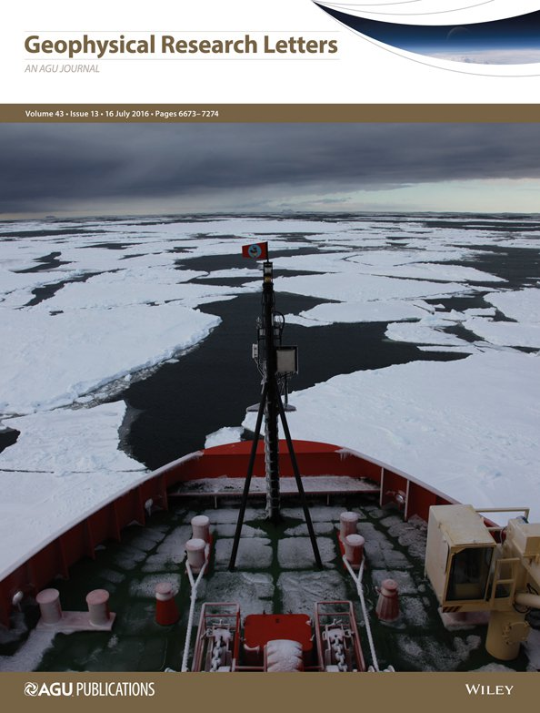
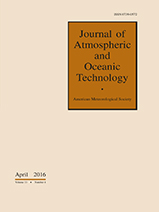

Peer-Reviewed Publications

Butterworth, B. J., and S. D. Miller, 2016: Air-sea exchange of carbon dioxide in the Southern Ocean and Antarctic marginal ice zone. Geophysical Research Letters, 43, 7223–7230, https://doi.org/10.1002/2016GL069581

Butterworth, B. J. and S. D. Miller, 2016: Automated Underway Eddy Covariance System for Air–Sea Momentum, Heat, and CO2 Fluxes in the Southern Ocean. Journal of Atmospheric and Oceanic Technology, 33, 635–652, https://doi.org/10.1175/JTECH-D-15-0156.1

Hough-Goldstein, J., M. Schiff, E. Lake and B. Butterworth, 2008: Impact of the biological control agent Rhinoncomimus latipes (Coleoptera : Curculionidae) on mile-a-minute weed, Persicaria perfoliata, in field cages. Biological Control, 46, 417–423, https://doi.org/10.1016/j.biocontrol.2008.04.001
Published Datasets
Miller, S. and B. Butterworth, (2016). Eddy covariance air-sea momentum, heat, and carbon dioxide fluxes in the Southern Ocean from the Nathaniel B. Palmer (cruise NBP1210). Integrated Earth Data Applications (IEDA). doi: http://dx.doi.org/10.1594/IEDA/323564.
Miller, S. and B. Butterworth, (2016). Eddy covariance air-sea momentum, heat, and carbon dioxide fluxes in the Southern Ocean from the Nathaniel B. Palmer (cruise NBP1402). Integrated Earth Data Applications (IEDA). doi: http://dx.doi.org/10.1594/IEDA/323565.